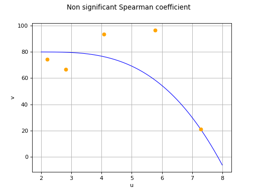

Spearman correlation test¶
This method deals with the modelling of a probability distribution of a
random vector  . It
seeks to find a type of dependency (here a monotonous correlation) which
may exist between two components
. It
seeks to find a type of dependency (here a monotonous correlation) which
may exist between two components  and
and  .
.
The Spearman’s correlation coefficient  , defined in
Spearman’s coefficient
, measures the strength of a monotonous relationship between two random
variables
, defined in
Spearman’s coefficient
, measures the strength of a monotonous relationship between two random
variables  and
and  . If we have a sample made up of
. If we have a sample made up of
 pairs
pairs ![\left\{ (u_1,v_1),(u_2,v_2),(u_N,v_N) \right\}]() ,
we denote
,
we denote  to be the estimated
coefficient.
to be the estimated
coefficient.
Even in the case where two variables and have a
Spearman’s coefficient equal to zero, the estimate
obtained from the sample may be non-zero:
the limited sample size does not provide the perfect image of the real
correlation. Pearson’s test nevertheless enables one to determine if the
value obtained by is significantly
different from zero. More precisely, the user first chooses a
probability  . From this value the critical value
. From this value the critical value
 is calculated automatically such that:
is calculated automatically such that:
if
 , one can
conclude that the real Spearman’s correlation coefficient
is not zero; the risk of error in making this
assertion is controlled and equal to ;
, one can
conclude that the real Spearman’s correlation coefficient
is not zero; the risk of error in making this
assertion is controlled and equal to ;if
 , there
is insufficient evidence to reject the null hypothesis
, there
is insufficient evidence to reject the null hypothesis
 .
.
An important notion is the so-called “ -value” of the test. This
quantity is equal to the limit error probability
-value” of the test. This
quantity is equal to the limit error probability
 under which the null correlation hypothesis
is rejected. Thus, Spearman’s’s coefficient is supposed non zero if and
only if is greater than the value
desired by the user. Note that the higher
under which the null correlation hypothesis
is rejected. Thus, Spearman’s’s coefficient is supposed non zero if and
only if is greater than the value
desired by the user. Note that the higher
 , the more robust the decision.
, the more robust the decision.
(Source code, png)
{kind=link}
